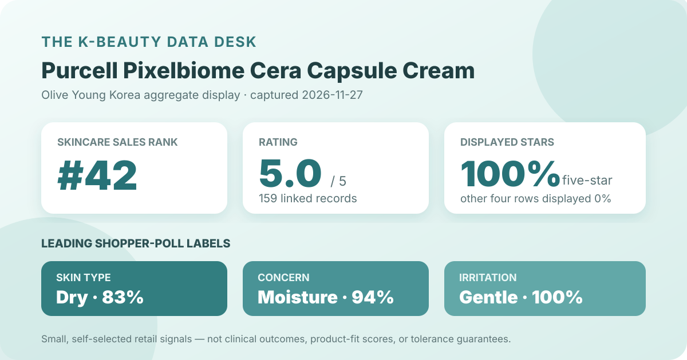
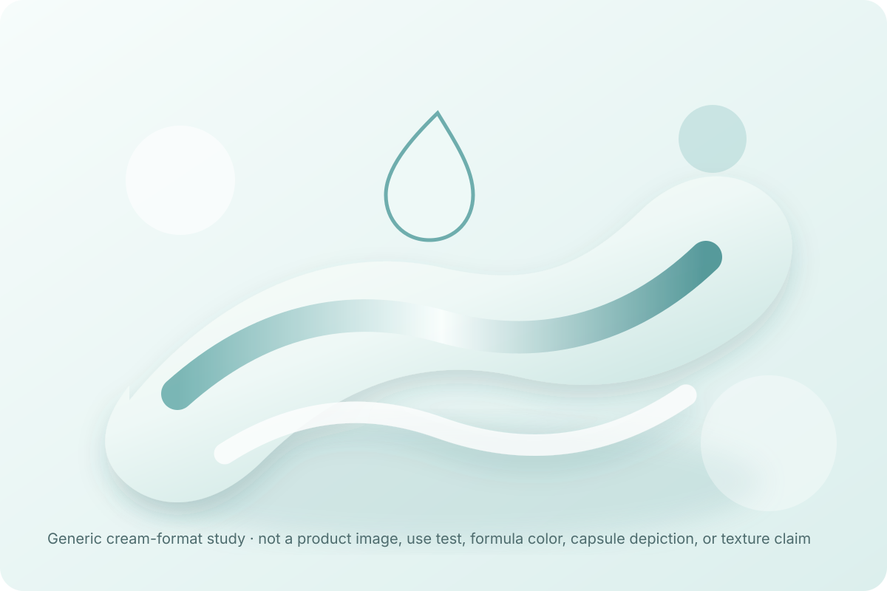

Data captured November 27, 2026. Olive Young Korea displayed “퍼셀 픽셀바이옴 세라캡슐 집중보습크림 80mL.” This article uses “Purcell Pixelbiome Cera Capsule Intensive Moisturizing Cream” as a readable English label. The analysis uses only the live ranking, product identity, aggregate rating, displayed star shares, and shopper polls. It does not copy or translate individual reviews, names, profiles, or photographs, and it makes no claim of firsthand use.

The short version: Purcell Pixelbiome Cera Capsule Intensive Moisturizing Cream appeared at number 42 in the captured skincare sales ranking. The ranking and product titles agreed, while the product header and official review detail both showed 5.0 out of 5 from 159 records. The displayed distribution was 100% five-star. Dry skin led the skin-type poll at 83%, moisture led the concern panel at 94%, and gentle led the irritation panel at 100%. These are favorable storefront signals from a small base, not proof of moisturization, barrier improvement, ceramide performance, clinical effect, or personal suitability.
The official display showed 5.0 stars from 159 review records. This is enough to describe an early retail signal, but it is much less stable than a mature listing with thousands of entries. One new cluster of lower ratings could move a small pool more noticeably, and a launch-period audience may not represent later shoppers.
The defensible conclusion is narrow: the linked feedback base was strongly positive at capture time. Retail ratings remain observational. They can mix impressions of the formula, packaging, price, delivery, expectations, promotional visibility, and the reasons people chose to leave feedback. The interface did not expose a verified-buyer census, raw star counts, a comparator, or a way to separate product experience from transaction experience.
The captured offer was an 80 mL cream at ₩29,000 and marked as a new item. New-product status matters because early reviews can come from a more engaged or promotion-aware group. The record count and rating will change, so this snapshot should not be treated as a settled long-term consensus.
The detailed review panel showed 100% five-star and 0% in the four-, three-, two-, and one-star rows. Unlike many retailer panels, these displayed rows total exactly 100%. That is directionally consistent with the 5.0 rounded average.
A 100% row still does not reveal the raw count behind each displayed percentage, how long respondents used the cream, what else was in their routines, or whether feedback was collected under a launch promotion. It also cannot predict how the distribution will look after the product accumulates a larger and more varied audience.
The skin-type panel displayed 83% dry, 16% combination, and 1% oily. The rows total 100%. Dry-skin respondents were therefore far more prominent in the captured poll than the other two groups.
That is a representation signal, not an 83% success rate and not proof that the cream is best for dry skin. The retailer did not disclose the poll denominator, selection timing, routine context, or outcomes within each subgroup. The 1% oily share also does not establish poor compatibility; it mainly means the captured display contains little oily-skin representation from which to generalize.
The concern panel showed 94% moisture, 4% soothing, and 2% wrinkle or brightening. These rows also total 100%. Moisture was overwhelmingly the leading label, but it is a shopper-selected storefront response. It is not a corneometer reading, transepidermal-water-loss measurement, controlled barrier study, or percentage increase in skin hydration.
The 94% figure does not mean the formula raised hydration by 94%, worked for 94% of all buyers, or outperformed another moisturizer. Without a baseline, comparison group, application schedule, follow-up period, and disclosed denominator, the poll cannot support a clinical or mechanistic conclusion.
The irritation panel displayed 100% gentle, 0% ordinary, and 0% felt irritation. That is the most favorable possible displayed split, but it comes from the same small, self-selected review environment.
A retailer poll cannot predict allergy, stinging, breakouts, sensitivity to the current formula, or interactions with retinoids, exfoliants, acne treatments, sunscreen, and makeup. It does not show whether respondents patch-tested, used the same amount, or applied the product under comparable weather and routine conditions. The zero rows should not be converted into a claim of zero irritation risk.
The official review view exposed the rating, count, star shares, and three shopper-poll panels. During capture, it did not expose a stable retailer-generated anonymous theme summary suitable for reporting. This analysis therefore does not infer recurring topics from the visible review feed.
That boundary matters. A handful of comments visible on one screen cannot represent all 159 records, and copying or translating individual review text would add personal or copyrighted material without strengthening the aggregate evidence. The article stops at the statistics the interface clearly displayed.

The retailer identifies the item as a cream. In general skincare language, a cream is a leave-on emulsion often used after lighter steps, but that category does not define thickness, spread, slip, tack, absorption speed, finish, scent, occlusiveness, or behavior under sunscreen and makeup.
I did not open, dispense, spread, layer, or wear this product. The local visual uses abstract folds only to indicate a generic cream format. It does not reproduce the product, packaging, color, capsule appearance, or a real swatch, and it should not be read as sensory evidence.
The captured title used “cera capsule,” ceramide, intensive-moisture, and immediate barrier-improvement language. Those phrases identify the listing and its marketing context; they do not establish ingredient identity, source, concentration, encapsulation performance, stability, delivery, penetration, or a measured change in barrier function.
This analysis did not independently capture and reconcile a complete ingredient list across markets. It does not infer a ceramide dose or claim that a named technology produces a clinical result. Readers who need ingredient, allergen, fragrance, or regional-formula details should consult the current package and official disclosure for the exact item received.
Rank 42 describes one capture of Olive Young Korea's skincare sales list. It is not a clinical ranking or a claim that this is the forty-second-best cream. Launch timing, advertising, inventory, category placement, seasonality, price, and short-term demand can move a listing quickly.
The page displayed ₩29,000 for 80 mL and labeled the listing as new. Those details can change independently of the review aggregates. Before buying, verify the current seller, formula, volume, stock, expiry information, directions, return terms, delivery estimate, and checkout price.
The product header and detailed review view both displayed 5.0 out of 5 from 159 linked review records. The displayed star distribution was 100% five-star and 0% in every other row.
Dry skin led at 83%, followed by combination at 16% and oily at 1%. These self-selected shares describe representation in the captured poll and do not prove suitability.
No. It is a shopper-poll label, not an instrument measurement, controlled comparison, barrier-function study, or percentage increase in hydration.
No. The small aggregate cannot predict allergy, irritation, sensitivity, routine interactions, or any individual's response.
No. This article analyzes retailer-displayed aggregates only and uses brand-neutral vector artwork rather than a product photograph or tested swatch.
Purcell Pixelbiome Cera Capsule Intensive Moisturizing Cream was the first distinct unpublished product after 41 covered ranking positions. The captured listing was internally consistent: rank 42, matching identity, 5.0 stars from 159 records, a 100% five-star display, dry skin leading at 83%, moisture leading at 94%, and gentle leading at 100%.
The signal is unusually favorable but early. It supports describing current retail sentiment and poll representation, not claiming moisturization, immediate barrier improvement, ceramide efficacy, clinical benefit, or universal tolerance. The practical next step is to verify the current formula and offer, then decide whether a new cream fills a real gap in a routine that already works.
Source: Olive Young Korea product listing and official aggregate review statistics, captured November 27, 2026. Open the source product page.
← All reviews · Review-volume rankings · Skin-poll explorer · Methodology